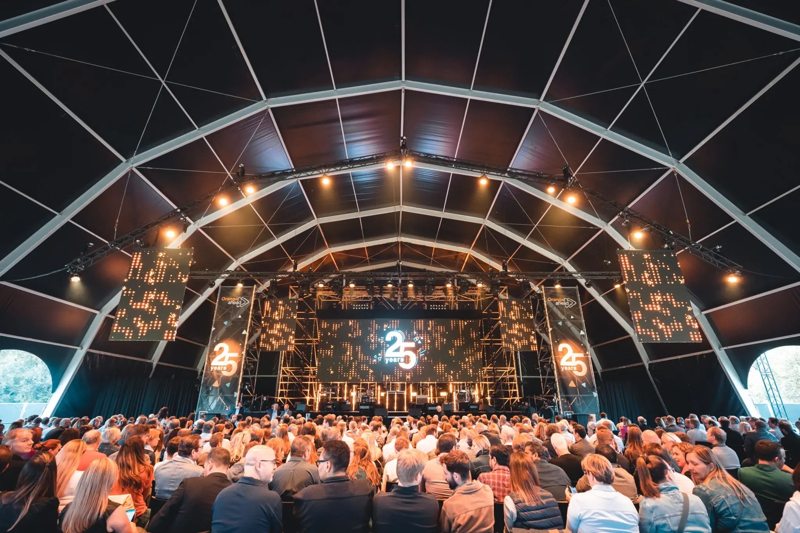
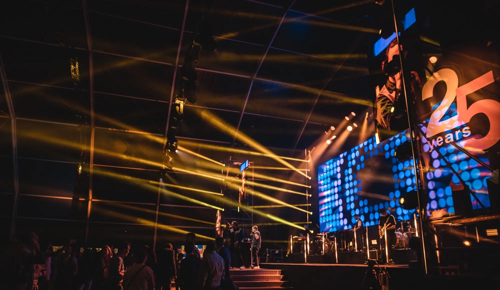

25 Years Orange
Together with Novid and Balthazar Events, I helped celebrate the 25th anniversary of Belgian telecom company Orange. The event took place in a large tent at De Schorre in Boom, with a big LED wall and delay screens. We put the photos from the photographers on site straight into the show, and I mixed all the visuals on the screens.